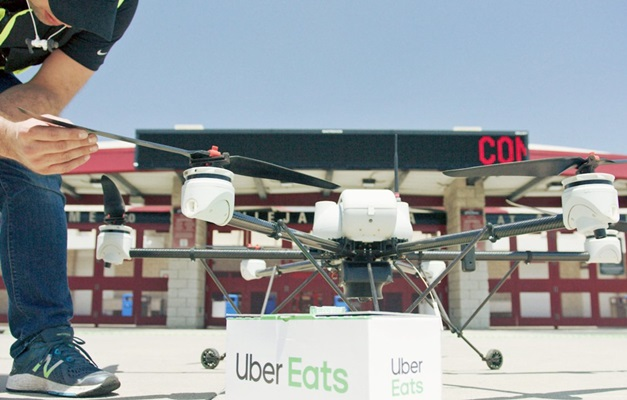
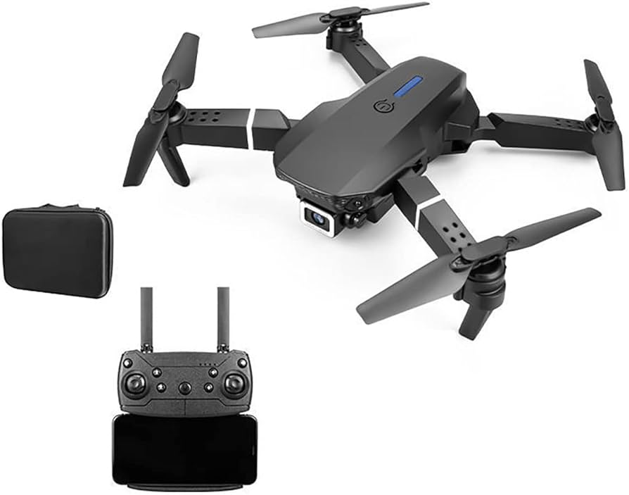
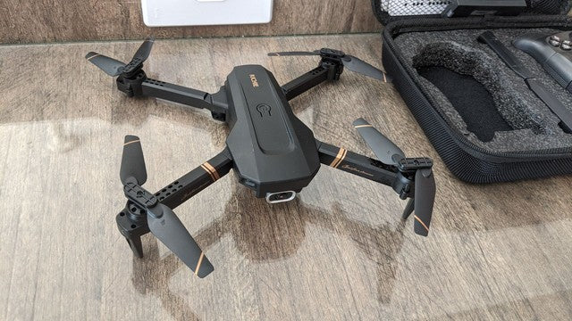
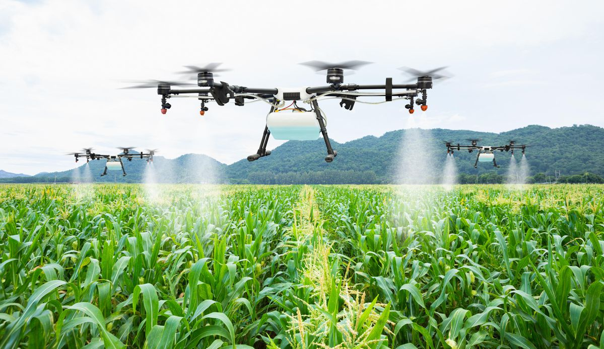

|
Quem está acostumado a ver os pequenos e quase discretos objetos sobrevoando por aí não imagina quantas histórias e curiosidades sobre drones podem haver espalhadas pelo mundo desde seu surgimento.
Por volta de 1977, nos Estados Unidos, surgiram as primeiras versões dos drones que, de lá pra cá, foram se moldando e se adaptando às necessidades tecnológicas.
A popularização foi tanta que, inicialmente, os drones eram feitos para missões militares e hoje podem ser usados de forma recreativa ou profissional, facilitando as demandas de empresas.
Continue a leitura e conheça 5 curiosidades sobre drones!
1. Missão militar
Ao ver um pequeno objeto hoje sendo pilotado por controle remoto não se imagina que uma das curiosidades sobre drones é que, ao ser lançado, era necessário cerca de 30 pessoas para controlá-lo.
Sua principal função era auxiliar os serviços militares nos Estados Unidos, mas sendo praticamente impossível facilitar os serviços com tantas pessoas envolvidas. Logo, os primeiros modelos foram adaptados reduzindo o número de profissionais que acompanhavam o trabalho.
No Brasil, o drone também foi criado para auxiliar em missões militares servindo como alvos aéreos, mas isso aconteceu somente seis anos depois do primeiro modelo de drone ser criado no mundo.
No entanto, ele só se popularizou mesmo com o uso recreativo de fotografias de imagens aéreas em alta definição. Hoje já é possível até participar de concursos com uso desse recurso.
2. Ajuda humanitária
Outra curiosidade sobre drones é que eles podem servir de ajuda até mesmo para serviços humanitários. Alguns testes já começaram a ser feitos com auxílio de drone para a entrega de medicamentos, por exemplo, até mesmo no Brasil.
Por aqui, a empresa SMX Systems realizou em Rifaina (SP) a entrega de medicamentos usando um drone em agosto de 2017.
3. Entrega delivery
A UberEats (entrega de alimentos como serviço adicional da Uber) já começou a realizar projetos para entregas de alimentos usando drones.
Os estudos foram discutidos nesse ano em San Diego, nos Estados Unidos, que tem como objetivo facilitar a entrega reduzindo o tempo que pode variar entre cinco e trinta minutos. A intenção não é projetar um drone específico para isso, mas sim, usar o serviço como forma de facilitar a experiência do usuário.
Para que esse serviço funcionasse no Brasil seria necessário mudanças na legislação, por enquanto ainda não há registro dessa tecnologia chegar por aqui.

4. Facilidade na construção civil
Assim como as curiosidades sobre drones estão sempre inovando o uso recreativo também podemos ver a facilidade desse equipamento de reduzir custos e tempo para empresas, em especial no setor civil.
Hoje já é possível usar drones e realizar inspeções de obras, coleta de dados de solo e temperatura, bem como projetar imagens do andamento de um projeto. Tudo isso com a qualidade em imagem e dados que esse equipamento transmite.
5. Voos restritos
Apesar de ser um equipamento pequeno, com altura de voo baixa e comandado através de controle remoto, o drone possui limitações quanto aos lugares que podem sobrevoar.
Apesar de ser muito usado em filmagens de casamento, comemorações de formatura e outros eventos é importante sobrevoar com segurança em lugares abertos e longe de qualquer interferência com outros sinais aéreos.
Você não pode fazer voos em aeroportos, por exemplo, pois pode causar transtornos com decolagem de outros aviões. Use com segurança.
Entre as curiosidades sobre drones que você pode conhecer a principal é com questão a segurança durante o voo, como idade mínima de 18 anos para pilotagem, ter o equipamento registrado e seguir as legislações da ANAC e ANATEL, por exemplo.
É importante entender sobre o uso de drones antes de fazer um investimento nesse equipamento. Usar com segurança e de forma legal evita prejuízos e transtornos para a sua empresa.
|
Primeiro drone da história foi criado por Nikola Tesla
Sim, isso mesmo que você leu! O pioneiro em tecnologia Nikola Tesla criou o primeiro drone da história, em 1898. Ele desenvolveu um protótipo sem fio controlado por rádio que era capaz de se elevar do solo e se estabilizar no ar. O aparelho pesava cerca de um quilo e foi criado para fins militares, como exploração de terreno inimigo.
 Drone Quadrocopter
Drones utilizados em inspeções de turbinas eólicas
As turbinas eólicas são utilizadas para produção de energia limpa, mas sua manutenção apresentam-se como um grande desafio. Pois, no modo tradicional a proteção de turbinas pode levar dias e envolver o uso de andaimes ou guindastes. Assim, os drones se apresentam como uma excelente alternativa, pois são capazes de inspecionar as pás das turbinas com rapidez e segurança.
Drones são usados em busca e resgate
Drones são frequentemente usados em operações de busca e resgate em áreas de difícil acesso, como em montanhas ou florestas. Estes equipamentos são hospedados com câmeras de alta resolução que ajudam a localizar pessoas desaparecidas ou em situação de perigo.
 Drone Zangão
Drones já estão sendo usados para proteção da vida selvagem
 Drones na Atividade Agrícola
Os drones também são úteis na proteção da vida selvagem, principalmente em áreas remotas ou inacessíveis. Pois eles são hóspedes com câmeras de alta resolução que auxiliam no monitoramento de animais ameaçados de extinção, como rinocerontes e elefantes, além de ajudar a localizar e prevenir a caça ilegal.
Drones estão sendo usados para entregas
Empresas como a Amazon já estão utilizando drones para entrega de produtos em áreas remotas ou de difícil acesso. Essa tecnologia pode reduzir significativamente o tempo de entrega e os custos de logística. Em suma, ainda existem muitas regulamentações em desenvolvimento para que essa prática se torne mais comum e segura.
Os drones já representam inovações incríveis e por isto já são utilizados em diversas áreas, desde a conservação da vida selvagem até a entrega de medicamentos e monitoramento climático.
À medida que a tecnologia evolui e novas aplicações são descobertas, é emocionante já pensarmos nas possibilidades ilimitadas que os drones farão para o futuro.
Contudo, é importante que seu uso seja responsável e ético, levando em consideração questões de privacidade, segurança e impacto ambiental. Com o devido cuidado e consideração, os drones têm o potencial de transformar o mundo para melhor.
|